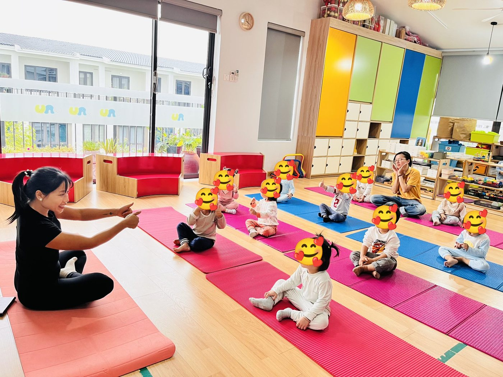
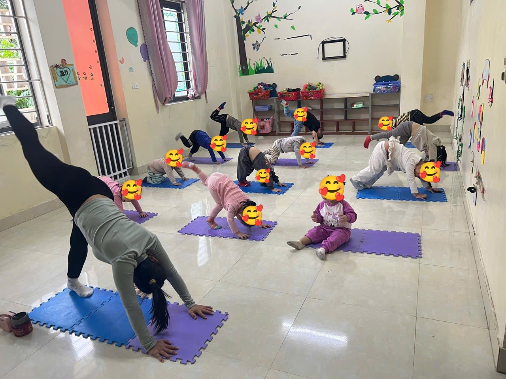
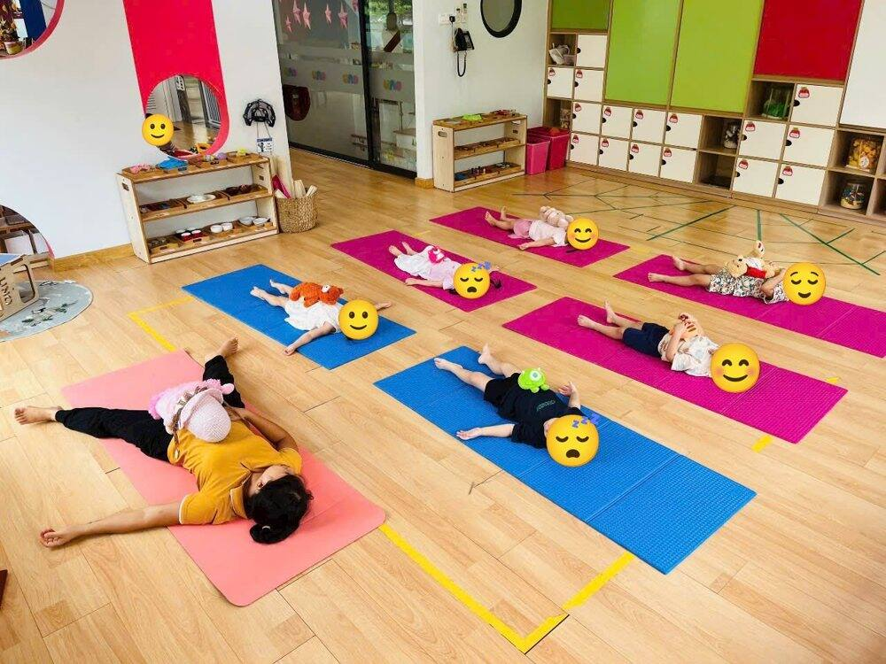

Dành cho HLV
Kỹ năng đứng lớp yoga trẻ em: từ lúc mở cửa phòng tới lời chào cuối buổi

Giáo án viết trên giấy luôn rất gọn gàng. Lớp học thật thì không.
Mười phút đầu có bạn khóc ở cửa. Có bạn chạy một vòng quanh phòng rồi mới chịu ngồi. Có bạn kể một câu chuyện rất dài về con mèo nhà bạn ấy, đúng lúc cô định dạy tư thế con mèo.
Đứng lớp yoga trẻ em là một kỹ năng riêng. Biết tư thế là một chuyện. Dẫn được hai mươi bạn nhỏ đi qua 30 phút, vui mà vẫn an toàn, có lúc chạy nhảy, có lúc nằm yên nghe hơi thở, là chuyện khác hẳn.
Sophia gom lại ở đây những điều cô dùng mỗi ngày, ở lớp mầm non, lớp công viên, lớp qua Zoom. Thầy cô thấy điều nào hợp thì giữ.
Trước giờ lên lớp: chuẩn bị mình trước, phòng sau
Ba phút cho chính mình
Trước khi mở cửa phòng, cô đứng yên ba phút. Hai bàn chân trần cảm nhận mặt sàn. Cột sống vươn dài từ xương cụt lên đỉnh đầu. Thở ra dài hơn hít vào.
Việc này không phải nghi thức cho đẹp. Trẻ nhỏ “đọc” hệ thần kinh của người lớn rất nhanh. Cô giáo vội, giọng sẽ cao, tay sẽ nhanh, và lớp sẽ ồn theo. Cô giáo bình an, lớp có chỗ để dựa vào. Đây là gốc của cả buổi học: hơi thở của người dạy.
Chuẩn bị phòng
- Đến sớm ít nhất 15 phút.
- Thảm xếp thành vòng tròn hoặc hàng so le, cách nhau đủ để hai bạn dang tay không chạm nhau.
- Dọn đồ sắc, đồ dễ vỡ, ổ điện lộ ra. Sàn khô, không trơn.
- Phòng thoáng mát. Có nước uống. Trẻ nóng lên nhanh hơn người lớn (Bergeron và cộng sự, 2011).
- Đồ dùng để sẵn trong một chiếc giỏ, cạnh chỗ cô ngồi: chuông, bóng, thẻ hình, khăn.
- Hỏi cô chủ nhiệm hoặc phụ huynh: hôm nay có bạn nào mệt, bạn nào cần lưu ý sức khỏe không.
Nhịp của một tiết học 30 phút
Trẻ nhỏ vận động theo từng đợt ngắn: chạy, dừng, chạy, nghỉ. Một nghiên cứu quan sát trẻ chơi tự do thấy phần lớn các đợt vận động mạnh của trẻ chỉ kéo dài vài giây (Bailey và cộng sự, 1995). Vì vậy tiết học của các con cần có nhịp: động rồi tĩnh, tĩnh rồi động. Không giữ tư thế quá lâu, không ngồi nghe quá lâu.
Dưới đây là nhịp mà Sophia hay dùng cho lớp 4 đến 6 tuổi. Bấm Bắt đầu để chạy thử. Mỗi khi chuyển phần, đồng hồ kêu một tiếng chuông nhẹ. Thầy cô có thể mở trang này trên điện thoại, để cạnh mình khi dạy.
⏱ Đồng hồ tiết học 30 phút
Với bé 2 đến 3 tuổi, cô rút còn 15 đến 20 phút, phần câu chuyện chỉ năm, sáu phút. Với các bạn 7 đến 10 tuổi, có thể kéo dài 45 phút, thêm thử thách cân bằng và phần thở dài hơn.
Đứng ở đâu, nhìn thế nào
Nhà nghiên cứu giáo dục Jacob Kounin từng quan sát hàng trăm lớp học và nhận ra: giáo viên giữ lớp tốt không phải người xử lý lỗi giỏi nhất, mà là người dường như lúc nào cũng “thấy” cả lớp (Kounin, 1970). Ông gọi đó là withitness, tạm hiểu là “luôn có mặt”.
Trong lớp yoga, điều này rất cụ thể:
- Chọn chỗ thấy hết các con. Đầu vòng tròn, hoặc phía trước hàng thảm. Lưng không quay về phía lớp quá vài giây.
- Khi đi chỉnh cho một bạn, cô đứng hoặc quỳ sao cho mắt vẫn thấy phần còn lại của lớp.
- Hạ thấp người. Ngồi hoặc quỳ khi nói chuyện. Trẻ nghe người lớn ngồi ngang tầm dễ hơn người lớn đứng cao nói xuống.
- Làm mẫu như soi gương. Khi đối diện các con, cô giơ tay trái để các con giơ tay phải theo. Lớp nhỏ không cần phân biệt trái phải, chỉ cần “làm giống cô”.


Giọng nói và tín hiệu
Cô có ba “tầng” giọng: giọng kể chuyện vui và rõ, giọng bình thường để hướng dẫn, và giọng thì thầm. Điều lạ là, khi lớp ồn nhất, giọng thì thầm lại hiệu quả nhất. Cô hạ giọng xuống, các con tò mò, phải im lặng mới nghe được.
Bên cạnh giọng nói, mỗi lớp cần một vài tín hiệu thống nhất từ buổi đầu:
- 🔔 Tiếng chuông: nghe chuông thì dừng, ngồi xuống, nghe đến khi tiếng chuông tắt.
- ✋ Bàn tay bông hoa: cô giơ tay xòe năm ngón, các con giơ theo và im lặng dần.
- 🔢 Đếm ngược 5, 4, 3, 2, 1: về thảm của mình trước khi đếm xong.
- 👏 Vỗ tay theo nhịp: cô vỗ một nhịp, các con vỗ lại giống hệt.
Tín hiệu chỉ hiệu quả khi được tập như một trò chơi, lặp lại nhiều lần trong mấy buổi đầu, và cô luôn giữ đúng.
Hướng dẫn ngắn: một lời, một việc
Trí nhớ làm việc của con người chỉ giữ được vài điều cùng lúc, ở trẻ nhỏ còn ít hơn (Cowan, 2001). Nên câu hướng dẫn “các con lên thảm, ngồi bắt chéo chân, đặt tay lên gối, lưng thẳng rồi nhắm mắt lại” là quá dài. Đến đoạn “đặt tay lên gối” thì nửa lớp đã quên.
Cô chia nhỏ: “Về thảm.” Chờ. “Ngồi bắt chéo chân.” Chờ. “Tay lên gối.” Và làm trước, nói sau: cô ngồi xuống trước, các con nhìn là hiểu. Lời nói chỉ là phần thêm.
Sau khi hỏi một câu, cô đếm thầm ba giây trước khi nói tiếp. Nhà nghiên cứu Mary Budd Rowe thấy rằng khi giáo viên chờ khoảng ba giây sau câu hỏi, học sinh trả lời nhiều hơn và đầy đủ hơn (Rowe, 1986). Ở lớp yoga, ba giây ấy cũng là một hơi thở.
Ba quy tắc, tạo cùng các con
Những lớp học có nề nếp tốt thường xây quy tắc và thói quen ngay từ những buổi đầu tiên (Emmer, Evertson và Anderson, 1980). Lớp yoga trẻ em cũng vậy, nhưng quy tắc nên ít, ngắn và nói theo hướng làm gì, không phải cấm gì. Ở lớp Sophia chỉ có ba điều:
- Thảm là ngôi nhà của con. Con ở trên thảm của mình, trừ khi cô mời đi chơi.
- Tay chân hiền. Tay chân mình chỉ để tập và để thương nhau.
- Chuông kêu, mình dừng.
Đây chính là bậc đầu tiên của yoga, ahimsa, không làm đau nhau, được nói bằng ngôn ngữ của một em bé bốn tuổi. Cô hỏi các con: “Vì sao mình cần tay chân hiền nhỉ?” Các con tự trả lời. Quy tắc mình tự nói ra thì mình nhớ lâu hơn.

Tám tình huống khó, và cách cô xử lý
Bấm vào từng thẻ để lật. Mặt trước là tình huống, mặt sau là điều cô thường làm. Không có cách nào đúng với mọi đứa trẻ. Đây chỉ là điểm bắt đầu.
An toàn là kỹ năng đứng lớp số một
Cô nhắc lại điều này trong mọi khóa học. Một tiết yoga trẻ em đẹp nhất là tiết mà các con về nhà vui vẻ và lành lặn.
- Không ấn, không kéo người con xuống cho sâu hơn. Tay cô chỉ đặt hờ để con cảm nhận.
- Không cho trẻ nín thở, không thở mạnh dồn dập kéo dài.
- Không cho trẻ nhỏ đứng bằng đầu, đứng bằng vai hay dồn sức nặng lên cổ.
- Ưu tiên tư thế đơn giản, chuyển động nhiều hướng cho cột sống, cân bằng vừa sức. Chọn tư thế cho đúng mục tiêu, không chọn vì đẹp.
- Hỏi trước về hen suyễn, bệnh tim, động kinh, dị ứng, chấn thương gần đây.

Khi nào dừng buổi tập và gọi người lớn, gọi y tế
Dừng ngay và báo nhà trường, phụ huynh, gọi cấp cứu khi cần, nếu một bé: khó thở, thở rít, môi tím tái; đau ngực; ngất hoặc lơ mơ; co giật; ngã đập đầu rồi nôn, buồn ngủ bất thường; đau dữ dội ở một khớp, không cử động được. Thầy cô nên học một khóa sơ cứu trẻ em, biết vị trí hộp sơ cứu và số điện thoại liên lạc của gia đình trước mỗi lớp.
Kết thúc buổi, và sau buổi học
Năm phút thư giãn cuối giờ là phần các con nhớ nhất. Đèn dịu, nhạc nhẹ, giọng cô chậm lại. Nếu có thêm cô giáo cùng lớp, chia nhau mỗi người xoa đầu, xoa lưng cho vài bạn nằm gần mình, mỗi bạn một, hai phút, có hỏi con trước.
Sau đó là một câu hỏi nhỏ trong vòng tròn: “Hôm nay con thích nhất điều gì?” Và lời cảm ơn.
Còn với cô giáo, buổi học chưa kết thúc. Tối đó, cô ghi ba dòng vào sổ: điều gì vui, điều gì chưa ổn, lần sau đổi gì. Trong tám bậc của yoga, đây là svadhyaya, tự quan sát mình. Không phải để chê mình. Để mỗi tuần mình dạy dịu dàng và vững vàng hơn một chút.

Điều cô học được
Hồi mới dạy, cô nghĩ giữ lớp là giữ cho các con im lặng. Giờ cô nghĩ khác.
Giữ lớp là giữ một không gian an toàn để các con được ồn, được chạy, được cười, rồi được dẫn về với hơi thở. Không gian ấy bắt đầu từ cô giáo. Từ đôi chân đứng vững, cột sống vươn dài, hơi thở chậm, và một trái tim không vội.
Lớp học không cần im lặng. Lớp học cần một người lớn bình an.
🌿 Muốn luyện kỹ năng đứng lớp cùng cô?
Trong khóa Đào tạo Huấn luyện viên Yoga trẻ em, học viên được thực hành dẫn lớp, được Sophia góp ý trực tiếp về giọng nói, vị trí đứng, cách xử lý tình huống, và được học cách soạn giáo án theo nhịp động, tĩnh của trẻ.
Đọc tiếp: Kỹ năng giao tiếp cùng trẻ, Tốt nghiệp HLV 30 giờ rồi, tìm lớp dạy ở đâu?, 20 trò chơi trong lớp Yoga và Trò chơi gõ chuông.
📚 Tài liệu tham khảo
- Kounin JS. Discipline and Group Management in Classrooms. Holt, Rinehart and Winston, 1970.
- Emmer ET, Evertson CM, Anderson LM. Effective classroom management at the beginning of the school year. The Elementary School Journal, 1980;80(5):219–231.
- Cowan N. The magical number 4 in short-term memory: a reconsideration of mental storage capacity. Behavioral and Brain Sciences, 2001;24(1):87–114.
- Rowe MB. Wait time: slowing down may be a way of speeding up! Journal of Teacher Education, 1986;37(1):43–50.
- Bailey RC, Olson J, Pepper SL, et al. The level and tempo of children’s physical activity: an observational study. Medicine & Science in Sports & Exercise, 1995;27(7):1033–1041.
- Bergeron MF, Devore C, Rice SG; American Academy of Pediatrics. Climatic heat stress and exercising children and adolescents. Pediatrics, 2011;128(3):e741–e747.
- Wong HK, Wong RT. The First Days of School. Harry K. Wong Publications, 1991.
- Patañjali. Yoga Sutra, chương II, câu 30–32 (ahimsa, svadhyaya).